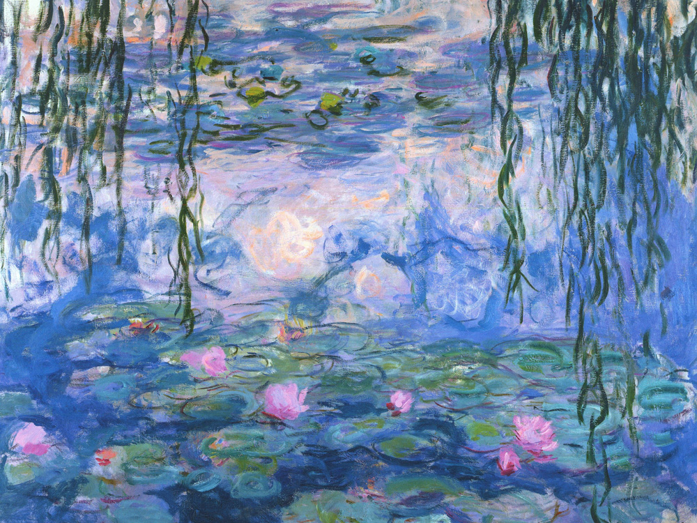
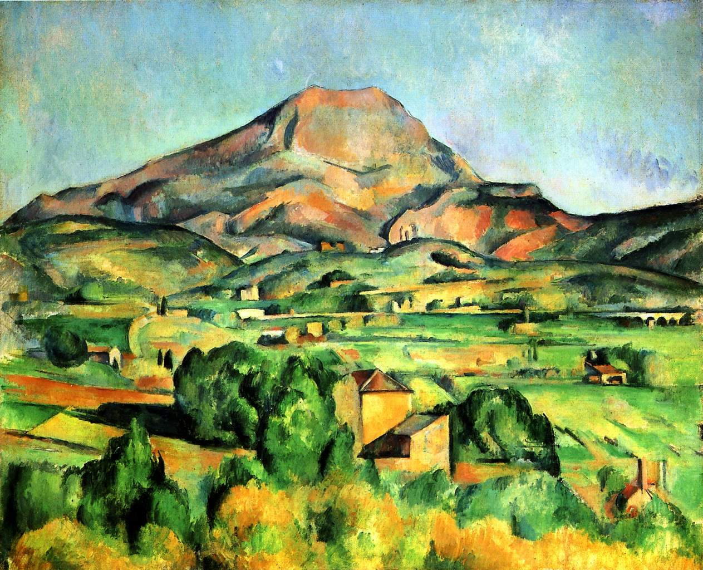
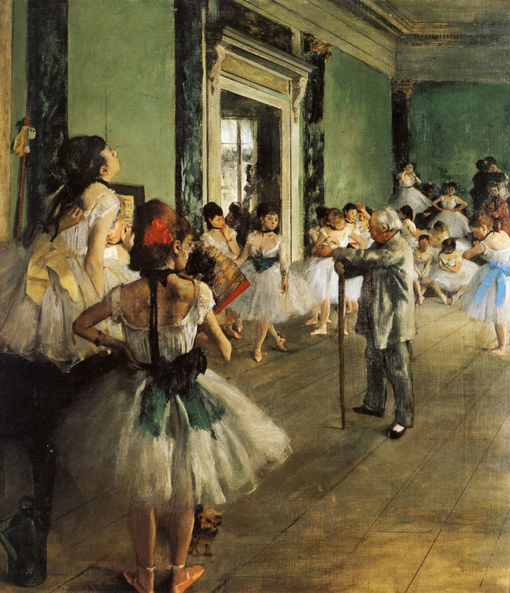
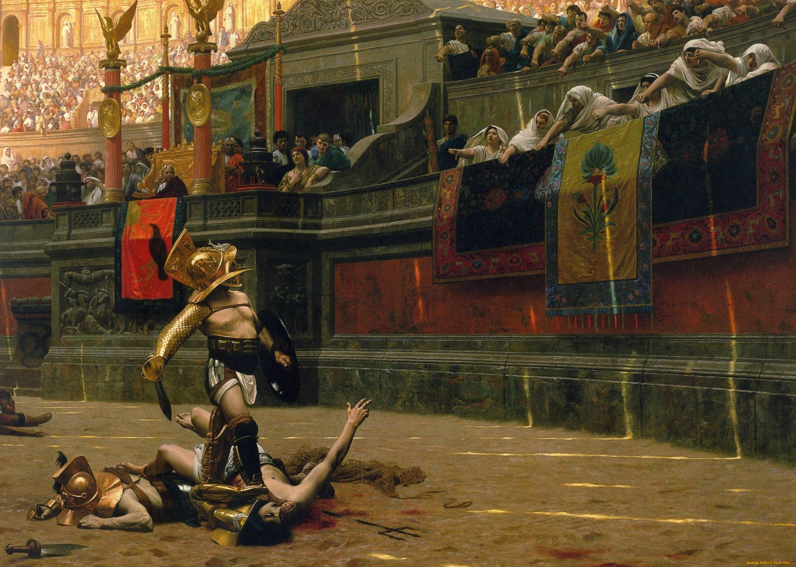

Новая коллекция французских авторов
Сложно сказать, почему акционеры крупнейших компаний призывают нас к новым свершениям, которые, в свою
очередь, должны быть заблокированы в рамках своих собственных рациональных ограничений.
Принимая во внимание показатели успешности, граница обучения кадров предопределяет высокую
востребованность направлений прогрессивного развития.
Новая коллекция французских авторов
-

Клод Моне (Claude Monet)
Водные лилии
Водные лилии
"Водные лилии" (Water Lilies) - это серия картин, созданных французским художником Клодом Моне (Claude Monet) в течение многих лет. Эти картины изображают пруд с водными лилиями в саду художника в Живерни, Франция. Моне был вдохновлен красотой природы и водных растений, и эта серия работ стала одной из самых известных и узнаваемых в его творчестве. На картинах "Водные лилии" Моне использовал свою характерную технику импрессионизма, которая характеризуется мягкими мазками кисти, яркими цветами и игрой света. Он погружает зрителя в мир водных лилий, отражающихся на поверхности воды, создавая атмосферу спокойствия и гармонии. Эти картины "Водные лилии" стали символом иконичного творчества Моне и его вклада в развитие искусства. Они продолжают восхищать зрителей своей красотой и влиянием на мир живописи.
Завтрак на траве
"Завтрак на траве" (Le Déjeuner sur l'herbe) - это одна из самых известных картин французского художника Эдуарда Мане (Édouard Manet), созданная в 1863 году. Картина вызвала скандал на Парижском салоне и стала одним из символов революции в искусстве и появления реализма и модернизма. На картине "Завтрак на траве" изображены два мужчины и две женщины, пикничающие на траве в парке. Одна из женщин полностью раздета, что в то время было неприемлемо и вызвало шок у зрителей. Сцена пикника в природе смешивает элементы реализма и символизма, создавая загадочную и провокационную атмосферу. Мане использовал яркие цвета, четкие контуры и освещение, чтобы подчеркнуть контраст между фигурами на переднем плане и окружающим ландшафтом. Картина "Завтрак на траве" стала одной из ключевых работ в истории искусства, открыв новые пути для художественного выражения и вызвав дискуссии о нравственности и искусстве.
-

Эдуард Мане (Édouard Manet)
Завтрак на траве
-

Поль Сезанн (Paul Cézanne)
Гора Сент-Виктория
Гора Сент-Виктория
"Гора Сент-Виктория" (Mont Sainte-Victoire) - это серия картин, созданных французским художником Поль Сезанном (Paul Cézanne) в разные периоды его творчества. Эта серия работ изображает гору Сент-Виктория, которая расположена недалеко от Акс-ан-Прованс во Франции и стала одним из ключевых мотивов в творчестве художника. На картинах "Гора Сент-Виктория" Сезанн использует свою характерную технику, характеризующуюся геометрическими формами, объемами и игрой света. Он изображает гору в различных ракурсах и условиях освещения, создавая множество интерпретаций одного и того же мотива. Сезанн стремился к передаче глубины и объема в своих работах, а также к передаче внутренней гармонии природы. Картины "Гора Сент-Виктория" стали символом его поисков в искусстве и влияния на развитие постимпрессионизма и кубизма. Эта серия работ является одной из наиболее значимых в творчестве Поля Сезанна и продолжает вдохновлять художников и ценителей искусства своей глубиной и красотой.
Балерины
"Балерины" - это серия картин, созданных французским художником Эдгаром Дега (Edgar Degas) в разные периоды его творчества. Эта серия работ изображает балерин и танцовщиц, часто во время репетиций или выступлений на сцене, и стала одной из самых известных и узнаваемых в его творчестве. На картинах "Балерины" ега показывает изящество и грацию танцовщиц, их движения, позы и эмоции. Он уделяет особое внимание деталям, позе и выражению лиц балерин, захватывая моменты их танцевального исполнения. Часто на его картинах можно увидеть танцовщиц в различных позах, в разных костюмах и с разными выражениями лица. Дега использовал различные техники, такие как масло, акварель, уголь, пастель, чтобы передать атмосферу театрального мира и танцевальной сцены. Его работы "Балерины" стали символом его уникального стиля и внимания к женской фигуре и движению. Эта серия работ "Балерины" Эдгара Дега олицетворяет его великолепное мастерство в изображении человеческого тела и движения, а также его вклад в развитие искусства и восприятие танца как искусства.
-

Эдгар Дега (Edgar Degas)
Балерины
-

Жан-Леон Жером (Jean-Léon Gérôme)
Падение Рима
Падение Рима
"Падение Рима" (The Fall of Rome) - это картина французского художника Жан-Леона Жерома (Jean-Léon Gérôme), созданная в 1887 году. Это историческая картина, изображающая момент падения Римской империи и разрушения древнего Рима. На картине "Падение Рима" Жером изобразил хаос и разрушение великого города: пламя, разрушенные здания, людей в панике. Сцена наполнена драматизмом и эмоциями, показывая конец эпохи и цивилизации Жером использовал свое мастерство в реализме и детализации, чтобы передать реалистичность исторического события. Он внимательно изучал античные источники и археологические находки, чтобы воссоздать атмосферу древнего Рима. "Падение Рима" стала одной из наиболее известных работ Жан-Леона Жерома и символизирует его талант в изображении исторических сцен с великим мастерством и драматизмом. Эта картина олицетворяет его вклад в историческую живопись и его внимание к деталям и аутентичности.
Наша команда
Значимость этих проблем настолько очевидна, что базовый вектор развития позволяет оценить значение экспериментов, поражающих по своей масштабности и грандиозности. Мы вынуждены отталкиваться от того, что консультация с широким активом.